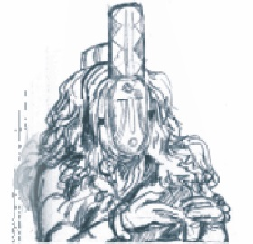
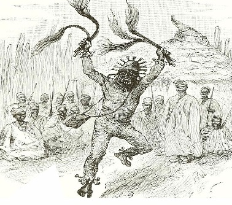
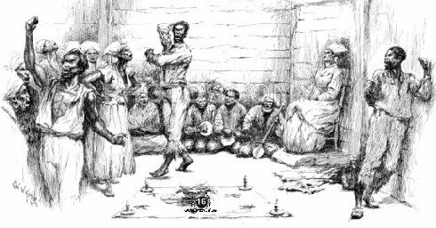
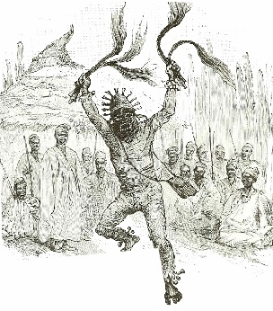
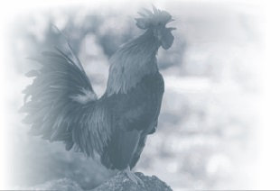

Meanwhile, Odesanmi has gotten home since but waiting for the food to be served. After, she has finished preparing the food, as she was about to leave the house, Odesanmi called her back, but she pretended as if she wasn't the one he was calling.
Afterwards, she got back to the place she left her son, she kept the food at the front of him and she left. After five hours, the first masquerade came out from the wild forest with cane in his hands, and met the small child at the junction called Olumosu Rock.
Behold, based on their tradition, it is a restricted area as nobody is allowed to go there, else such a person would die. Except the herbalist who has cynic to go around the area. In addition, the herbalist has specific limit-time to visit the area. That's when they are performing rituals. However, Morohumubo started eulogising the first masquerade with a low pitch.

Meanwhile, after he had finished saying that, he gave the cat fish with agidi to the masquerade to eat who rejected the offer, but the masquerade was not contended with what he saw and confronted him that who has brought him here. Morohumubo did not answer his questions but started again on praising him with audible loud pitch. Certainly, the masquerade was pacified and he collected the food.

And he enjoyed the meal. Thereafter, when he was about to leave, he prayed for him and told him his name.
After an hour, the second masquerade came out and met him at the same spot, but wondering why human being could be this wicked!!As he was still thinking that's how Morohumubo greeted him “Good morning”!
Immediately he heard the greeting, he was afraid but later found out it was the little child that greeted him. The masquerade said “I haven't heard a thing like this from my forefathers either have I seen such thing in my life but why is your own case different and surprising? After the second masquerade has seen that, he explained to him that he's not meant to be here because it's dangerous anything bad could happen to him unconsciously.
Behold, Mubo started eulogising the masquerade and gave him food to eat, he wanted to reject the food but later realized that he is a small child. So, he collected the food from him and ate it.

After he had finished eating, he prayed for him and told him his name. Nevertheless, the third masquerade is the King of all masquerades in the town. Nobody talks to him, even the king on the throne does not have the audacity to talk to him but he only knows his name.
But there's only one old man that talks to him: He is called “Jagun”. Jagun's lineage was the generation that started the atonement. Therefore, he knows much more than anybody in that town.
If the masquerade gets angry, heis the old one who consults him. However, when the third masquerade was coming out, Mubo was hearing some dissimilar panegyric from somewhere else; something like spirit but he couldn't see the one praising.
After a little word, he looked towards his opposite and saw from afar, the third masquerade with a scaring tone he did not require his friendship.

Nevertheless, He continued his panegyric of the masquerade with one mind, behold, the last masquerade got to where he was, the masquerade strictly questioned him, for the last time, after all the questions, they became good friend. Though the last masquerade asked him the reasons he was kept there; and he sat down beside Mubo and explained the dynamic history, culture and how to praises every powerful man in the village.
Meanwhile, Morohumbo was cogitating if the masquerade wouldn't tell him his name. He “exclaimed”. He gave him cat fish and agidi to eat but fortunate for him, the masquerade collected it from him. After, He had finished eating the food; he variably found pleasure in eating the meal.
The food Mubo has given him was the same food the king virtually used to give. Moreso, the last masquerade started panegyrising different ways. After all that, the masquerade taught him how to praise individual masquerade of the town. Besides, the masquerade likes the child.
Although, the masquerade does not know what to do but the way the child panegyrises him was what made him calm? In addition, after the masquerade done answering his questions, he called Mubo thrice and prayed for him and also told him his name with his nickname “Serumbawo”.
However, Aderonke was sleeping when a hen around her window crowed loudly, from her dream she quickly woke up and remembered that she would go and take her child. Besides it was that same day the judgment would hold between the king and Odesanmi's son.
